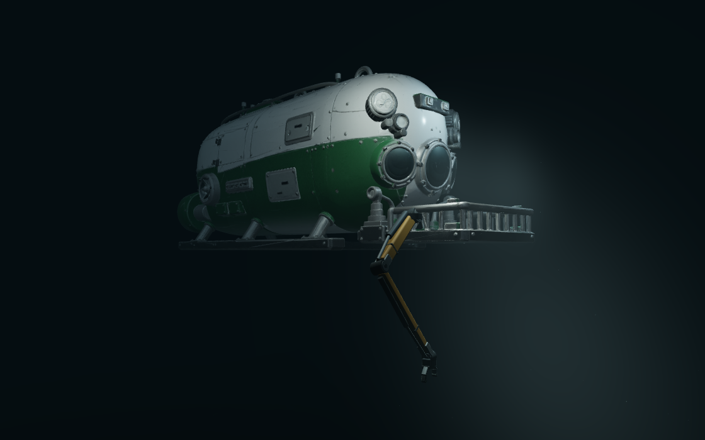

STAGE 10 · JCATE 2026
Fosa de Atacama
Desciende a casi ocho mil metros a bordo del Fendouzhe. Desde la cabina, usa sus instrumentos para observar el fondo marino y recoger muestras con una pinza robótica.

Cómo utilizarlo
- Elige cómo explorar. Abre la demo y selecciona la exposición automática para ver el recorrido narrado de aproximadamente un minuto, o inicia la expedición para pilotar.
- Controla la pinza. Con mouse, apunta y mantén el clic para cerrar. Con cámara, permite el acceso, muestra la mano derecha y junta el pulgar con el índice. Suelta el clic o separa los dedos para abrir.
- Sigue el monitor y las indicaciones. Activa la cámara de trabajo cuando la cabina te lo pida y consulta la bitácora para revisar tus observaciones.